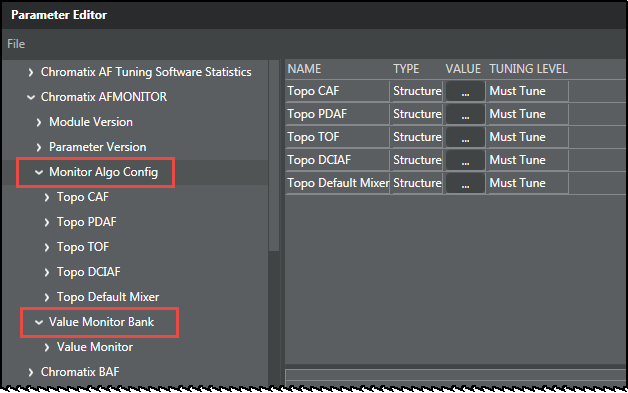
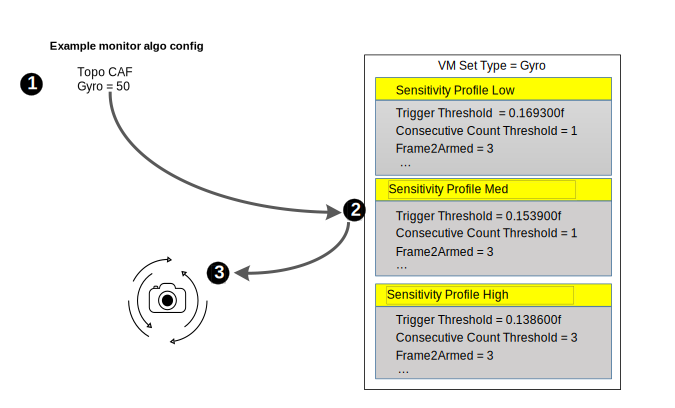

| Autofocus concepts / AF monitor | |
The value monitor instantiates the configuration and decision logic for each monitor algorithm. Although the monitor logic is similar to previous 3A versions, the structure, configuration, and operation of the value monitor is an entirely new implementation of that logic. The primary benefits of value monitors are flexible configurations and simplified tuning.
The following image displays the two main constructs for the value monitor.
The figure below illustrates how a sensitivity parameter interacts with
the table of parameters in the value monitor bank.

The parameters in each profile (low, med, high) are identical. However, their values are preconfigured to provide for varying levels of sensitivity based on the sensitivity parameter in the monitor algo config.
If a tuning engineer wants to make the gyro sensitivity more sensitive than the medium sensitivity profile, then the simplest way is to modify the gyro sensitivity to be more than 50. If the tuning engineer wants to make the gyro sensitivity less sensitive than the medium sensitivity profile, then modify the sensitivity to be less than 50.
NOTE: No parameters in the value monitor bank are changed while using the logical sensitivity parameters during the tuning process.